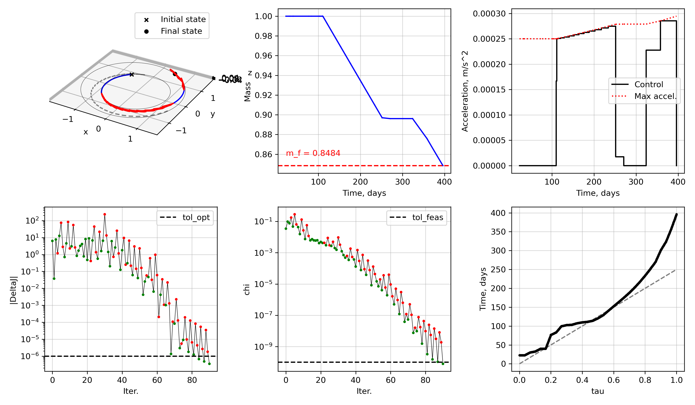

Pykep Compatible Problems#
The scocp_pykep extension provides OCP classes that are made to be compatible with pykep’s planet module to define initial/final rendez-vous conditions.
[!NOTE] Using the classes defined hereafter requires installing
scocp_pykepas well asscocp. In fact,scocp_pykephasscocpas one of its dependencies.
Planet-to-planet rendez-vous#
We consider a problem where:
the initial and final conditions are to rendez-vous with planets following Keplerian motion around the central body (a star);
the initial mass (wet mass) is fixed, and the objective is to maximize the final mass;
at departure and arrival, a v-infinity vector with a user-defined upper-bound on magnitude may be used;
the departure time from the initial planet and the arrival time are free and bounded;
This is analogous to pykep.trajopt.direct_pl2pl.
Mathematical model#
Mathematically, the problem is given by
Internally, to solve this problem, we define the augmented state and control
with augmented dynamics
Code#
We start with the usual imports
import cvxpy as cp
import matplotlib.pyplot as plt
import numpy as np
import pykep as pk
import os
import sys
# path to scocp and scocp_pykep
sys.path.append(os.path.join(os.path.dirname(os.path.abspath(__file__)), ".."))
import scocp
import scocp_pykep
Let’s now define our physical constants, spacecraft parameters, and canonical scales.
# define canonical parameters
GM_SUN = pk.MU_SUN # Sun GM, m^3/s^-2
MSTAR = 800.0 # reference spacecraft mass
ISP = 3000.0 # specific impulse, s
THRUST = 0.2 # max thrust, kg.m/s^2
G0 = pk.G0 # gravity at surface, m/s^2
DU = pk.AU # length scale set to Sun-Earth distance, m
VU = np.sqrt(GM_SUN / DU) # velocity scale, m/s
TU = DU / VU # time scale, s
t0_mjd2000_bounds = [1100.0, 1200.0] # initial epoch in mjd2000
TU2DAY = TU / 86400.0 # convert non-dimensional time to elapsed time in days
# define transfer problem discretization
tf_bounds = [100.0, 500.0]
t0_guess = 0.0
tf_guess = 250.0
N = 30
s_bounds = [0.01*tf_guess, 10*tf_guess]
We now define boundary conditions-related quantities for our problem, namely: the initial and final pykep.plane objects, the launch window bounds, final time bounds, and maximum departure/arrival v-infinities
# define initial and final planets
pl0 = pk.planet.jpl_lp('earth')
plf = pk.planet.jpl_lp('mars')
t0_mjd2000_bounds = [1100.0, 1200.0] # initial epoch in mjd2000
TU2DAY = TU / 86400.0 # convert non-dimensional time to elapsed time in days
# define transfer problem discretization
tf_bounds = [100.0, 500.0]
t0_guess = 0.0
tf_guess = 250.0
N = 30
s_bounds = [0.01*tf_guess, 10*tf_guess]
# max v-infinity vector magnitudes in km/s
vinf_dep = 1.0
vinf_arr = 0.5
We can now define the continuous control two-body dynamics integrator for the augmented state with dilated time (i.e. in \(\tau \in [0,1]\) space) and in canonical scales
integrator_01domain = scocp.ScipyIntegrator(
nx=8,
nu=4,
nv=1,
rhs=scocp.control_rhs_twobody_logmass_freetf,
rhs_stm=scocp.control_rhs_twobody_logmass_freetf_stm,
impulsive=False,
args=((
GM_SUN / (VU**2 * DU), # canonical gravitational constant
ISP * G0 * (TU/DU)), # canonical exhaust velocity of thruster
[0.0,0.0,0.0,1.0,0.0] # place-holder for control vector: [ax,ay,az,s,v]
),
method='DOP853', reltol=1e-12, abstol=1e-12
)
We can now define the SCOCP via the function scocp_pykep.scocp_pl2pl. Note we need the following inputs:
integrator_01domainclass, as defined abovepl0is the initialpykep.planetplfis the finalpykep.planetmassis the initial mass (wet mass), in kgmu_SIis the central gravitational constant, in SImax_thrustis the maximum thrust, in SIispis the Isp, in SInsegis the number of segmentst0_mjd2000_boundsis the bounds for the departure epoch, in MJD2000 (days)tf_boundsis the bounds on the final time, in dayss_boundsis the bounds on the dilation factor, in daysvinf_depis the max departure v-infinity magnitude, in km/svinf_arris the max arrival v-infinity magnitude, in km/sweightparameter is the initial penalty on constraint violations (default is 100).
problem = scocp_pykep.scocp_pl2pl(
integrator_01domain,
pl0,
plf,
mass = MSTAR,
mu_SI = pk.MU_SUN,
max_thrust = THRUST,
isp = ISP,
nseg = N,
t0_mjd2000_bounds = t0_mjd2000_bounds,
tf_bounds = tf_bounds,
s_bounds = s_bounds,
vinf_dep = vinf_dep,
vinf_arr = vinf_arr,
r_scaling = pk.AU,
v_scaling = pk.EARTH_VELOCITY,
weight = 100.0,
)
Note: there is no explicit check that ensures the canonical gravitational constant and canonical exhaust thrust used inside scocp_pl2pl matches that of the integrator! The user is responsible for setting those to be the same.
In fact, inside scocp_pl2pl, the canonical gravitational constant and canonical exhaust velocity are exactly computed by
self.mu = mu_SI / (self.v_scaling**2 * self.r_scaling)
self.cex = isp * pk.G0 * (self.t_scaling/self.r_scaling)
which is the same as what is done in the integrator argument above.
The SCvx* algorithm needs an initial guess. One way to supply an initial guess is to linearly interpolate the initial and final orbital elements (i.e. at the planets)
xbar, ubar, vbar = problem.get_initial_guess(t0_guess, tf_guess)
We can now setup the SCvx* algorithm and solve our problem
tol_feas = 1e-10
tol_opt = 1e-6
algo = scocp.SCvxStar(problem, tol_opt=tol_opt, tol_feas=tol_feas, rho1=1e-8, r_bounds=[1e-10, 10.0])
solution = algo.solve(
xbar,
ubar,
vbar,
maxiter = 200,
verbose = True
)
| Iter | J0 | Delta J | Delta L | chi | rho | r | weight | step acpt. |
1 | 5.9315e-01 | 6.3606e+00 | 6.3908e+00 | 3.4605e-02 | 9.9528e-01 | 1.0000e-01 | 1.0000e+02 | yes |
2 | 2.9315e-01 | 1.6428e-01 | 4.5551e+00 | 9.8267e-02 | 3.6066e-02 | 3.0000e-01 | 2.0000e+02 | yes |
3 | -6.8528e-03 | 6.9916e+00 | 2.0730e+01 | 7.7104e-02 | 3.3727e-01 | 3.0000e-01 | 4.0000e+02 | yes |
4 | -6.5069e-02 | -4.6447e+00 | 1.3725e+01 | 1.8512e-01 | -3.3841e-01 | 3.0000e-01 | 4.0000e+02 | no |
5 | -7.7595e-03 | 1.2637e+01 | 1.3582e+01 | 5.0969e-02 | 9.3047e-01 | 1.5000e-01 | 4.0000e+02 | yes |
6 | -5.3940e-02 | -6.9003e+01 | 1.1423e+00 | 2.9570e-01 | -6.0406e+01 | 4.5000e-01 | 4.0000e+02 | no |
7 | -4.1661e-04 | -2.2868e+00 | 1.0405e+00 | 5.4044e-02 | -2.1978e+00 | 2.2500e-01 | 4.0000e+02 | no |
...
97 | 1.9111e-01 | -1.5384e-07 | 3.5754e-07 | 9.8609e-13 | -4.3026e-01 | 6.1938e-07 | 3.5184e+15 | no |
98 | 1.9111e-01 | -4.1361e-08 | 3.2091e-07 | 5.7877e-12 | -1.2889e-01 | 3.0969e-07 | 3.5184e+15 | no |
99 | 1.9111e-01 | -3.3555e-07 | 2.9558e-07 | 1.2339e-11 | -1.1352e+00 | 1.5484e-07 | 3.5184e+15 | no |
100 | 1.9111e-01 | 2.6663e-07 | 2.8595e-07 | 9.3903e-12 | 9.3241e-01 | 7.7422e-08 | 3.5184e+15 | yes |
SCvx* algorithm summary:
Status : Optimal
Objective value : 1.91111361e-01
Penalized objective improvement : 2.66627415e-07 (tol: 1.0000e-06)
Constraint violation : 9.39026634e-12 (tol: 1.0000e-10)
Total iterations : 100
SCvx* algorithm time : 15.2741 seconds
Let’s check that it has been solved correctly
xopt, uopt, vopt, yopt, sols, summary_dict = solution.x, solution.u, solution.v, solution.y, solution.sols, solution.summary_dict
assert summary_dict["status"] == "Optimal"
assert summary_dict["chi"][-1] <= tol_feas
print(f"Initial guess TOF: {tf_guess*TU2DAY:1.4f}d --> Optimized TOF: {xopt[-1,7]*TU2DAY:1.4f}d (bounds: {tf_bounds[0]*TU2DAY:1.4f}d ~ {tf_bounds[1]*TU2DAY:1.4f}d)")
x0 = problem.target_initial.target_state(xopt[0,7])
xf = problem.target_final.target_state(xopt[-1,7])
# evaluate v-infinity vectors
vinf_dep_vec, vinf_arr_vec = yopt[0:3], yopt[3:6]
print(f"||vinf_dep|| = {np.linalg.norm(vinf_dep_vec)*VU:1.4f} m/s (max: {vinf_dep*VU:1.4f} m/s), ||vinf_arr|| = {np.linalg.norm(vinf_arr_vec)*VU:1.4f} m/s (max: {vinf_arr*VU:1.4f} m/s)")
# evaluate nonlinear violations
geq_nl_opt, sols = problem.evaluate_nonlinear_dynamics(xopt, uopt, vopt, steps=20)
print(f"Max dynamics constraint violation: {np.max(np.abs(geq_nl_opt)):1.4e}")
assert np.max(np.abs(geq_nl_opt)) <= tol_feas
Initial guess TOF: 250.0000d --> Optimized TOF: 351.0990d (bounds: 100.0000d ~ 500.0000d)
||vinf_dep|| = 1000.0000 m/s (max: 1000.0000 m/s), ||vinf_arr|| = 500.0000 m/s (max: 500.0000 m/s)
Let’s plot our results
# initial and final orbits
initial_orbit_states = problem.get_initial_orbit()
final_orbit_states = problem.get_final_orbit()
# plot results
fig = plt.figure(figsize=(12,7))
ax = fig.add_subplot(2,3,1,projection='3d')
ax.set(xlabel="x", ylabel="y", zlabel="z")
for (_ts, _ys) in sols_ig:
ax.plot(_ys[:,0], _ys[:,1], _ys[:,2], '--', color='grey')
for (_ts, _ys) in sols:
ax.plot(_ys[:,0], _ys[:,1], _ys[:,2], 'b-')
_us_zoh = scocp.zoh_controls(problem.times, uopt, _ts)
ax.quiver(_ys[:,0], _ys[:,1], _ys[:,2], _us_zoh[:,0], _us_zoh[:,1], _us_zoh[:,2], color='r', length=5.0)
ax.scatter(x0[0], x0[1], x0[2], marker='x', color='k', label='Initial state')
ax.scatter(xf[0], xf[1], xf[2], marker='o', color='k', label='Final state')
ax.plot(initial_orbit_states[1][:,0], initial_orbit_states[1][:,1], initial_orbit_states[1][:,2], 'k-', lw=0.3)
ax.plot(final_orbit_states[1][:,0], final_orbit_states[1][:,1], final_orbit_states[1][:,2], 'k-', lw=0.3)
ax.set_aspect('equal')
ax.legend()
ax_m = fig.add_subplot(2,3,2)
ax_m.grid(True, alpha=0.5)
for (_ts, _ys) in sols:
ax_m.plot(_ys[:,7]*canonical_scales.TU2DAY, np.exp(_ys[:,6]), 'b-')
ax_m.axhline(np.exp(sols[-1][1][-1,6]), color='r', linestyle='--')
ax_m.text(xopt[0,7]*canonical_scales.TU2DAY, 0.01 + np.exp(sols[-1][1][-1,6]), f"m_f = {np.exp(sols[-1][1][-1,6]):1.4f}", color='r')
ax_m.set(xlabel="Time, days", ylabel="Mass")
#ax_m.legend()
ax_u = fig.add_subplot(2,3,3)
ax_u.grid(True, alpha=0.5)
ax_u.step(xopt[:,7]*canonical_scales.TU2DAY, np.concatenate((vopt[:,0], [0.0])), label="Control", where='post', color='k')
for idx, (_ts, _ys) in enumerate(sols):
ax_u.plot(_ys[:,7]*canonical_scales.TU2DAY, Tmax/np.exp(_ys[:,6]), color='r', linestyle=':', label="Max accel." if idx == 0 else None)
ax_u.set(xlabel="Time, days", ylabel="Acceleration")
ax_u.legend()
ax_DeltaJ = fig.add_subplot(2,3,4)
ax_DeltaJ.grid(True, alpha=0.5)
algo.plot_DeltaJ(ax_DeltaJ, summary_dict)
ax_DeltaJ.axhline(tol_opt, color='k', linestyle='--', label='tol_opt')
ax_DeltaJ.legend()
ax_DeltaL = fig.add_subplot(2,3,5)
ax_DeltaL.grid(True, alpha=0.5)
algo.plot_chi(ax_DeltaL, summary_dict)
ax_DeltaL.axhline(tol_feas, color='k', linestyle='--', label='tol_feas')
ax_DeltaL.legend()
ax = fig.add_subplot(2,3,6)
for (_ts, _ys) in sols_ig:
ax.plot(_ts, _ys[:,7]*canonical_scales.TU2DAY, '--', color='grey')
for (_ts, _ys) in sols:
ax.plot(_ts, _ys[:,7]*canonical_scales.TU2DAY, marker="o", ms=2, color='k')
ax.grid(True, alpha=0.5)
ax.set(xlabel="tau", ylabel="Time, days")
plt.tight_layout()
